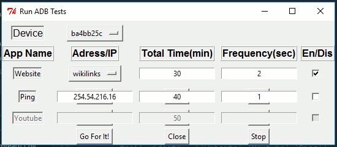
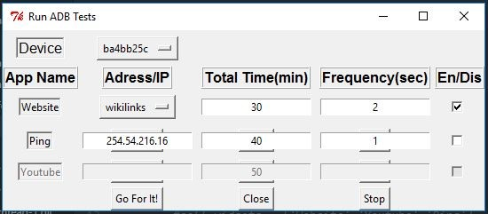

Project: Android GUI Automation
GUI Tool to automate WebBrowsing, Ping, Youtube on Android devices
These generate different traffic patterns with frequency and duration of traffic defined by user
This uses Python and multithreading concepts.
This is an independent project done by Aashish to help RF field testers.
Source Code here
GIF
JPG
 {%endblock%}